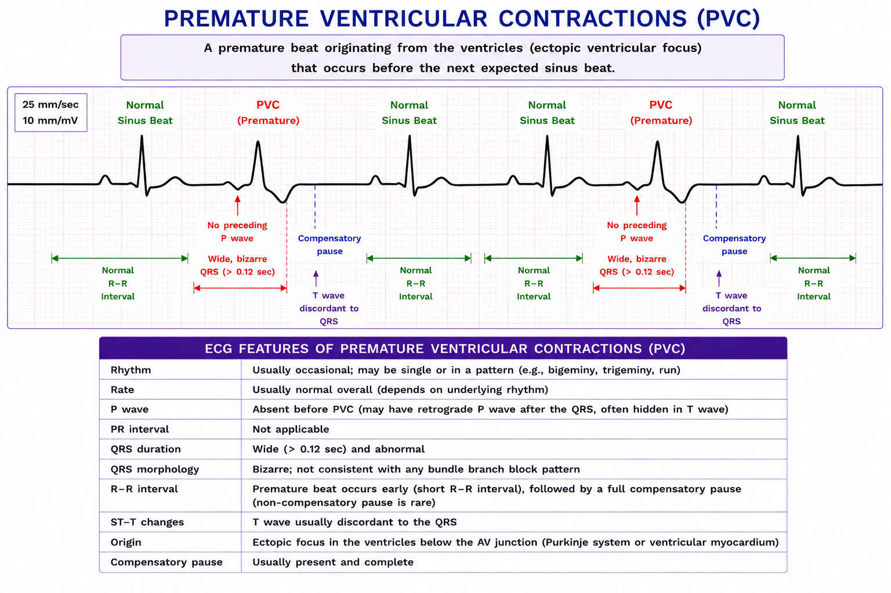
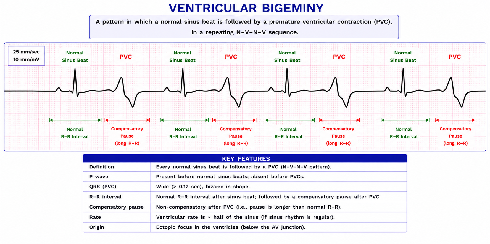
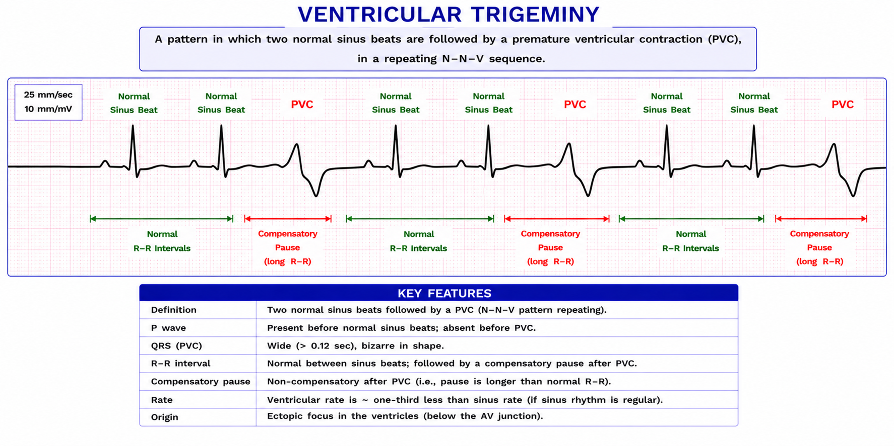
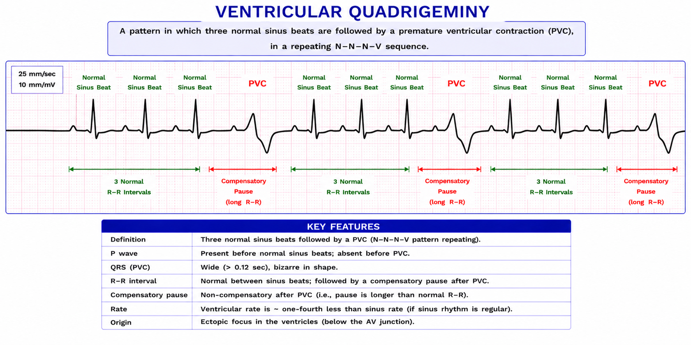

PREMATURE VENTRICULAR CONTRACTIONS (PVCs)
- Wide QRS.
- No P wave.
- PAC -> Atrial problem -> Narrow QRS.
- PVC -> Ventricular problem -> Wide QRS.

1. PVC Couplet

2. PVC Triplet

3. PVC Run
- 4 or more PVC are comes together

4. Ventricular Bigeminy
- Every 2nd beat is a premature ventricular contraction
- Normal - premature - compensatory pause - normal - premature

5. Ventricular Triplet
- Every 3rd beat is a premature ventricular contraction
- Normal - normal - premature - normal - normal - premature

6. Ventricular Quadrigeminy
- Every 4th beat is a premature ventricular contraction
- Normal - normal - normal - premature - normal - normal - normal - premature

PVC and ventrical